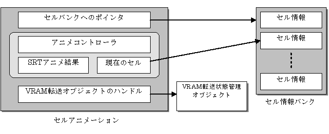

セルアニメーション概要
概念図

説明
セルアニメーションは、NITRO-CHARACTERで作成されたセルアニメーションを再生するためのものです。
セルアニメーションは、内部にアニメーションコントローラを持ち、このアニメーションコントローラを用いてセルをアニメーションさせます。
アニメーションデータとそのアニメーション結果（インデックス値）を用いて参照するセルデータの関連付けは、このセルアニメーションで実行されます。
セルアニメーションの内部データ
セルデータバンクへのポインタ
メインメモリ上に読み出したセルデータバンクへのポインタが格納されます。
セルデータバンクは静的なデータであり、書き換えられることは有りません。
セルアニメーションで使用されるセルは、このポインタが指し示すセルデータバンクに含まれていなければなりません。
表示中のセルデータへのポインタ
アニメーション再生により、現在画面に表示されているセルへのポインタが格納されます。
このポインタが指し示すセルは、セルデータバンクへのポインタが指し示すセルデータバンクの中に存在します。
SRTアニメ結果
アニメーション再生により変化した、セルの位置、回転、スケールが格納されます。
セルVRAM転送状態オブジェクトのハンドル（cellTransferStateHandle)
VRAM転送アニメーションをサポートする際に利用されます。
セルVRAM転送状態オブジェクトのハンドルは、VRAM転送を行うCellが管理、保存すべき状態、情報を持っています。
使用されない場合はNNS_G2D_INVALID_CELL_TRANSFER_STATE_HANDLEが代入されます。
参照
なし
履歴
2004/12/06 初版